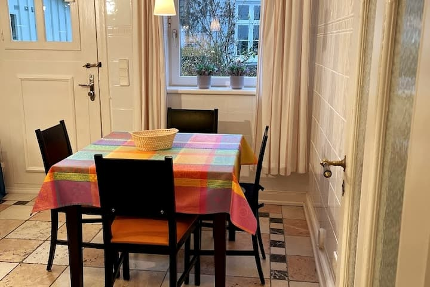
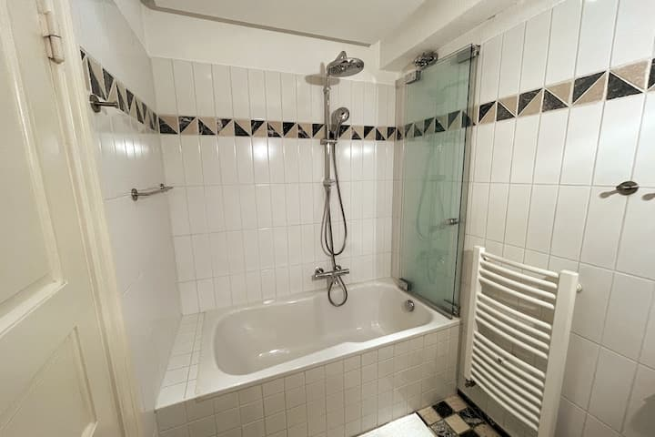
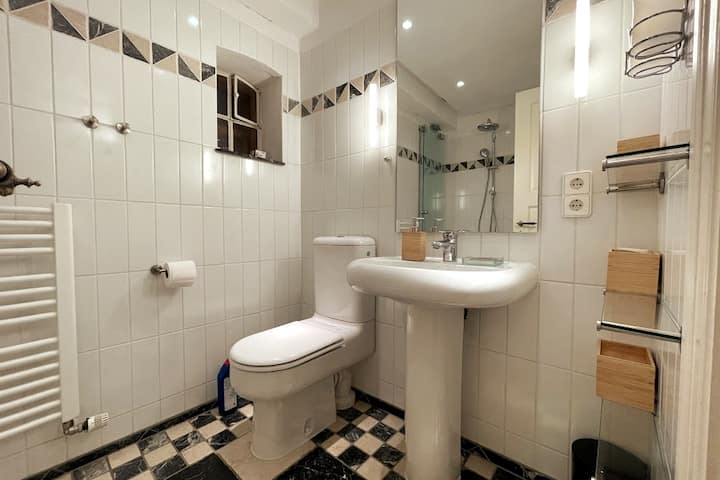
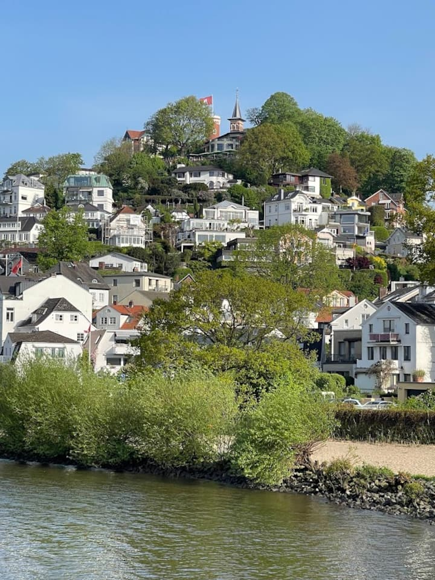

KLEINE MOMENTE, GANZ IN RUHE
Die Küche
Ein wohnlicher Mittelpunkt für ruhige Morgen, kleine Pausen und gemeinsame Momente. Zur Ferienwohnung gehört eine eigene Küche, eingebettet in die warme Atmosphäre des Hauses.
Zeit für den eigenen Rhythmus.HAMBURG · BLANKENESE
Ein besonderer Rückzugsort im Hamburger Treppenviertel – nur wenige Schritte von der Elbe entfernt.
Mitten im besonderen Charakter des Blankeneser Treppenviertels liegt diese ruhige Ferienwohnung in einem historischen Kapitänshaus.
Ein Rückzugsort nahe der Elbe, an dem Hamburg für einen Moment etwas langsamer werden darf.
Ein Blick ins HausKLEINE MOMENTE, GANZ IN RUHE
Ein wohnlicher Mittelpunkt für ruhige Morgen, kleine Pausen und gemeinsame Momente. Zur Ferienwohnung gehört eine eigene Küche, eingebettet in die warme Atmosphäre des Hauses.
Zeit für den eigenen Rhythmus.ZURÜCKZIEHEN & DURCHATMEN
Ein ruhiger Rückzugsort für die Nacht. Die Ferienwohnung verfügt über ein Schlafzimmer mit Kingsize-Bett; zusätzlich steht ein Schlafsofa zur Verfügung.
Ein Schlafzimmer. Raum für Erholung.ZUSAMMEN SEIN
Frühstück am Morgen, eine Pause zwischendurch oder ein ruhiger Abend – der Essbereich fügt sich selbstverständlich in den wohnlichen Charakter der Ferienwohnung ein.

DIE LEISE SEITE HAMBURGS
Grün vor dem Fenster und eine ruhige Atmosphäre rund um das Haus verleihen dem Aufenthalt eine angenehm entspannte Seite.
Mit Blick in den Garten.IN DEN TAG FINDEN
Ein Badezimmer gehört zur Ferienwohnung. Ein kurzer Einblick in einen ganz alltäglichen Teil Ihrer Auszeit.


AUCH HIER VERBUNDEN
WLAN ca. 114 Mbit/s
Arbeitsplatz ein eigener Platz
DIE UMGEBUNG
ZWISCHEN TREPPEN UND WASSER
Die charakteristischen Treppen, der Blick zum Wasser, der besondere Charme der Häuser: Im Blankeneser Treppenviertel zeigt sich Hamburg von seiner entspannten Seite.
Der Elbstrand liegt laut Unterkunftsbeschreibung etwa 80 Meter entfernt. Über die Treppen erreichen Sie das Elbufer, eine Bushaltestelle, ein Restaurant und den Fähranleger in ungefähr 2–3 Minuten.
Auch die Stadt bleibt nah: Für die Fahrt mit öffentlichen Verkehrsmitteln in die Hamburger Innenstadt, zu den Landungsbrücken oder zur Elbphilharmonie sind laut Beschreibung rund 45 Minuten einzuplanen.

Räume, Details und die Elbe.
Die Bilder lassen sich vergrößern.
Hinweis Die Unterkunft wird in der aktuellen Unterkunftsbeschreibung als nicht für Kinder und Kleinkinder geeignet angegeben.
IHRE AUSZEIT BEGINNT MIT EINER IDEE
Für Fragen oder eine Aufenthaltsanfrage freuen wir uns über Ihre Nachricht.
Aufenthalt anfragenDemo-Konzept: Hier können Sie Ihre Anfrage vorbereiten. Es werden keine Daten an Klaus gesendet. Ein Kontaktweg ist noch nicht hinterlegt.